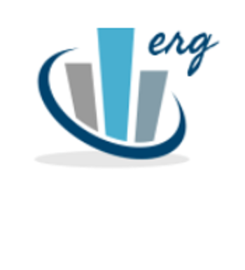

About Us
We are a student-led consulting group within the Industrial/Organizational Psychology program at Montclair State University, founded in 2019. We look at ourselves as hard-working, driven students who wish to strengthen MSU’s I/O Psych program, as well as learn outside of the classroom to build upon our skills and knowledge. We pride ourselves on strong involvement in local and national I/O groups, namely METRO and SIOP. For more information about the roles and responsibilities of Eagle I.O, please visit our Consultant Manual.
What We Do
We are responsible for executing various projects. Our main project is developing an Engagement survey, which we wish to distribute to external organizations. We also run a mentorship program within the MSU I/O program, where we train most of the 2nd year graduate students to guide the new students into becoming successful students themselves. Additionally, we host a variety of events, such as new student orientation, networking opportunities, and casual hangouts.